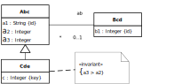

Understanding and Implementing Information
Management Concepts and Techniques
JavaScript Front-End Web App Tutorial Part 6: Inheritance in Class Hierarchies
 Learn how to
deal with inheritance in class hierarchies, such as
TextBook and Biography as subclasses of Book
Learn how to
deal with inheritance in class hierarchies, such as
TextBook and Biography as subclasses of Book
Warning: This tutorial manuscript may still contain errors and may still be incomplete in certain respects. Please report any issue to Gerd Wagner at [email protected].
This tutorial is also available in the following formats: PDF. You may run the example app from our server, or download it as a ZIP archive file. See also our Web Engineering project page.
Copyright © 2014-2023 Gerd Wagner
This tutorial article, along with any associated source code, is licensed under The Code Project Open License (CPOL), implying that the associated code is provided "as-is", can be modified to create derivative works, can be redistributed, and can be used in commercial applications, but the article must not be distributed or republished without the author's consent.
2023-06-01
Table of Contents
- Foreword
- 1. Subtyping and Inheritance
- 2. Subtyping with Plain JS
List of Figures
- 1.1. The object type
Bookwith two subtypes:TextBookandBiography - 1.2. The object types
EmployeeandAuthorshare several attributes - 1.3.
EmployeeandAuthorare generalized byPerson - 1.4. An information model with two class hierarchies
- 1.5. A class hierarchy having the root class
Vehicle - 1.6. A multiple inheritance hierarchy
- 1.7. The result of applying the Class Hierarchy Merge design pattern
- 1.8. An information design model with a
Personroles hierarchy - 1.9. An SQL table model with a single table representing
the
Bookclass hierarchy - 1.10. An STI table model representing the
Personroles hierarchy - 1.11. A TCI table model representing the
Personroles hierarchy - 1.12. A JTI table model representing the
Personroles hierarchy - 2.1. The JS class model of the merged
Bookclass hierarchy - 2.2. The JS class model of the
Personroles class hierarchy - 2.3. An STI model of the
Personroles class hierarchy - 2.4. A TCI model of the
Personroles class hierarchy
This tutorial is Part 6 of our series of six tutorials about model-based development of front-end web applications with plain JavaScript. It shows how to build a web app that manages subtype (inheritance) relationships between object types.
The app supports the four standard data management operations
(Create/Retrieve/Update/Delete). It
is based on the example used in the other parts, with the object types
Book, Person, Author,
Employee and Manager. The other parts
are:
-
Part 1: Building a minimal app.
-
Part 2: Handling constraint validation.
-
Part 3: Dealing with enumerations.
-
Part 4: Managing unidirectional associations, such as the associations between books and publishers, assigning a publisher to a book, and between books and authors, assigning authors to a book.
-
Part 5: Managing bidirectional associations, such as the associations between books and publishers and between books and authors, also assigning books to authors and to publishers.
You may also want to take a look at our open access book Building Front-End Web Apps with Plain JavaScript, which includes all parts of the tutorial in one document, dealing with multiple object types ("books", "publishers" and "authors") and taking care of constraint validation, associations and subtypes/inheritance.
Table of Contents
The concept of a subtype, or subclass, is a fundamental concept in natural language, mathematics, and informatics. For instance, in English, we say that a bird is an animal, or the class of all birds is a subclass of the class of all animals. In linguistics, the noun "bird" is a hyponym of the noun "animal".
An object type may be specialized by subtypes (for instance, Bird is specialized by Parrot) or generalized by supertypes (for instance, Bird and Mammal are generalized by Animal). Specialization and generalization are two sides of the same coin.
A subtype inherits all features from its supertypes. When a subtype inherits attributes, associations and constraints from a supertype, this means that these features need not be repeatedly rendered for the subtype in the class diagram, but the reader of the diagram has to understand that all features of a supertype also apply to its subtypes.
When an object type has more than one direct supertype, we have a case of multiple inheritance, which is common in conceptual modeling, but prohibited in many object-oriented programming languages, such as Java and C#, which only allow class hierarchies with a unique direct supertype for each object type.
A new object type may be introduced by specialization whenever it
represents a special case of another object
type. We illustrate this for our example model where we want to capture
text books and biographies as special cases of books. This means that text
books and biographies also have an ISBN, a title and a publishing year,
but in addition they have further features such as the attribute
subjectArea for text books and the attribute
about for biographies. Consequently, in Figure 1.1,
we introduce
the object types TextBook and Biography by
specializing the object type Book, that is, as subtypes of
Book.

When specializing an object type, we define additional features for
the newly added subtype. In many cases, these additional features are more
specific properties. For instance, in the case of TextBook
specializing Book, we define the additional attribute
subjectArea. In some programming languages, such as in Java,
it is therefore said that the subtype extends the supertype.
However, we can also specialize an object type without defining additional properties or operations/methods, but by defining additional constraints.
We illustrate generalization with the example model shown in Figure 1.2.

After adding the object type Employee we notice that
Employee and Author share a number of attributes
due to the fact that both employees and authors are people, and being an employee
as well as being an author are roles played by
people. So, we may generalize these two object types by adding a joint
supertype Person, as shown in the diagram of Figure 1.3.

When generalizing two or more object types, we move those features
that are shared by them to the newly added supertype where they are
centralized. In the case of Employee and Author,
this set of shared features consists of the attributes name,
dateOfBirth and dateOfDeath. In general, shared
features may include attributes, associations and constraints.
Notice that since in an information design model, each top-level
class needs to have a standard identifier, in the new class
Person we have declared the standard identifier attribute
personId, which is inherited by all subclasses. Therefore, we
have to reconsider the attributes that had been declared to be standard
identifiers in the subclasses before the generalization. In the case of
Employee, we had declared the attribute
employeeNo as a standard identifier. Since the employee
number is an important business information item, we have to keep this
attribute, even if it is no longer the standard identifier. Because it is
still an alternative identifier (a "key"), we define a uniqueness constraint for
it with the constraint
keyword key.
In the case of Author, we had declared the attribute
authorId as a standard identifier. Assuming that this
attribute represents a purely technical, rather than business, information
item, we dropped it, since it's no longer needed as an identifier for
authors. Consequently, we end up with a model which allows to identify
employees either by their employee number or by their
personId value, and to identify authors by their
personId value.
We consider the following extension of our original example model, shown in Figure 1.4, where we have added two class hierarchies:

The intension of an object type is given by the set of its features, including attributes, associations, constraints and operations.
The extension of an object type is the set of all objects instantiating the object type. The extension of an object type is also called its population.
We have the following duality: while all features of a supertype are included in the intensions, or feature sets, of its subtypes (intensional inclusion), all instances of a subtype are included in the extensions, or instance sets, of its supertypes (extensional inclusion). This formal structure has been investigated in formal concept analysis.
Due to the intension/extension duality we can specialize a given type in two different ways:
-
By extending the type's intension through adding features in the new subtype (such as adding the attribute
subjectAreain the subtypeTextBook). -
By restricting the type's extension through adding a constraint (such as defining a subtype
MathTextBookas aTextBookwhere the attributesubjectAreahas the specific value "Mathematics").
Typical OO programming languages, such as Java and C#, only support the first possibility (specializing a given type by extending its intension), while XML Schema and SQL99 also support the second possibility (specializing a given type by restricting its extension).
A type hierarchy (or class
hierarchy) consists of two or more types, one of them being
the
root (or top-level) type, and all others having at
least
one direct supertype. When all non-root types have a unique direct
supertype, the type hierarchy is a single-inheritance
hierarchy,
otherwise it's a multiple-inheritance
hierarchy. For instance, in Figure 1.5 below,
the class Vehicle is the root of a single-inheritance
hierarchy, while Figure 1.6 shows an example of a
multiple-inheritance
hierarchy, due to the fact that AmphibianVehicle has two
direct superclasses: LandVehicle and
WaterVehicle.
The simplest case of a class hierarchy, which has only one level of subtyping, is called a generalization set in UML, but may be more naturally called segmentation. A segmentation is complete, if the union of all subclass extensions is equal to the extension of the superclass (or, in other words, if all instances of the superclass instantiate some subclass). A segmentation is disjoint, if all subclasses are pairwise disjoint (or, in other words, if no instance of the superclass instantiates more than one subclass). Otherwise, it is called overlapping. A complete and disjoint segmentation is a partition.

In a class diagram, we can express these constraints by annotating
the shared generalization arrow with the keywords complete and disjoint enclosed in braces. For instance, the
annotation of a segmentation with {complete, disjoint} indicates that it
is a partition. By default, whenever a segmentation does not have any
annotation, like the segmentation of Vehicle into
LandVehicle and WaterVehicle in Figure 1.6 above, it
is {incomplete, overlapping}.
An information model may contain any number of class hierarchies.
Consider the simple class hierarchy of the design model in Figure 1.1
above, showing
a disjoint segmentation of the class Book. In such a case,
whenever there is only one level (or there are only a few levels) of
subtyping and each subtype has only one (or a few) additional properties,
it's an option to re-factor the class hierarchy by merging all the
additional properties of all subclasses into an expanded version of the
root class such that these subclasses can be dropped from the model,
leading to a simplified model.
This Class Hierarchy
Merge design pattern comes in two forms. In its simplest form,
the segmentations of the original class hierarchy are disjoint, which
allows to use a single-valued category
attribute for representing the specific category of each instance of the
root class corresponding to the unique subclass instantiated by it. When
the segmentations of the original class hierarchy are not disjoint, that
is, when at least one of them is overlapping, we need to use a
multi-valued category
attribute for representing the set of types instantiated by an object. We
only discuss the simpler case of Class Hierarchy
Merge re-factoring for disjoint segmentations, where we take
the following re-factoring steps:
-
Add an enumeration datatype that contains a corresponding enumeration literal for each segment subclass. In our example, we add the enumeration datatype
BookCategoryEL. -
Add a
categoryattribute to the root class with this enumeration as its range. Thecategoryattribute is mandatory [1], if the segmentation is complete, and optional [0..1], otherwise. In our example, we add acategoryattribute with rangeBookCategoryELto the classBook. Thecategoryattribute is optional because the segmentation ofBookintoTextBookandBiographyis incomplete. -
Whenever the segmentation is rigid, we designate the
categoryattribute as frozen, which means that it can only be assigned once by setting its value when creating a new object, but it cannot be changed later. -
Move the properties of the segment subclasses to the root class, and make them optional. We call these properties, which are typically listed below the
categoryattribute, segment properties. In our example, we move the attributessubjectAreafromTextBookandaboutfromBiographytoBook, making them optional, that is [0..1]. -
Add a constraint (in an invariant box attached to the expanded root class rectangle) enforcing that the optional subclass properties have a value if and only if the instance of the root class instantiates the corresponding category. In our example, this means that an instance of
Bookis of category "TextBook" if and only if its attributesubjectAreahas a value, and it is of category "Biography" if and only if its attributeabouthas a value. -
Drop the segment subclasses from the model.
In the case of our example, the result of this design re-factoring
is shown in Figure 1.7
below. Notice that the constraint (or
"invariant") represents a logical sentence where the logical operator
keyword "IFF" stands for the logical equivalence operator "if and only if"
and the property condition prop=undefined tests if the
property prop does not have a value.

Subtyping and inheritance have been supported in Object-Oriented Programming (OOP), in database languages (such as SQL99), in the XML schema definition language XML Schema, and in other computational languages, in various ways and to different degrees. At its core, subtyping in computational languages is about defining type hierarchies and the inheritance of features: properties, constraints and methods in OOP; table columns and constraints in SQL99; elements, attributes and constraints in XML Schema.
In general, it is desirable to have support for multiple classification and multiple inheritance in type hierarchies. Both language features are closely related and are considered to be advanced features, which may not be needed in many applications or can be dealt with by using workarounds.
Multiple classification means that an object has more than one direct type. This is mainly the case when an object plays multiple roles at the same time, and therefore directly instantiates multiple classes defining these roles.
Multiple
inheritance is typically also related to
role classes. For instance, a
student assistant is a person playing both the role of a student and the
role of an academic staff member, so a corresponding OOP class
StudentAssistant inherits from both role classes
Student and AcademicStaffMember. In a similar
way, in our example model above, an AmphibianVehicle inherits
from both role classes LandVehicle and
WaterVehicle.
The minimum level of support for subtyping in OOP, as provided, for instance, by Java and C#, allows defining inheritance of properties and methods in single-inheritance hierarchies, which can be inspected with the help of an is-instance-of predicate that allows testing if a class is the direct or an indirect type of an object. In addition, it is desirable to be able to inspect inheritance hierarchies with the help of
-
a predefined instance-level property for retrieving the direct type of an object (or its direct types, if multiple classification is allowed);
-
a predefined type-level property for retrieving the direct supertype of a type (or its direct supertypes, if multiple inheritance is allowed).
A special case of an OOP language is JavaScript, which did
originally not have an explicit language element for defining classes,
but only for defining constructor functions. Due to its dynamic
programming features, JavaScript allows using various code patterns for
implementing classes, subtyping and inheritance. In modern JavaScript,
starting from ES2015, defining a superclass and a subclass is
straightforward. First, we define a base class, Person,
with two properties, firstName and
lastName:
class Person { constructor (first, last) { // assign base class properties this.firstName = first; this.lastName = last; } }
Then, we define a subclass, Student, with one
additional property, studentNo:
class Student extends Person { constructor (first, last, studNo) { // invoke constructor of superclass super( first, last); // assign additional properties this.studentNo = studNo; } }
Notice how the constructor of the superclass is invoked with
super( first, last) for assigning the superclass
properties.
In XML Schema, a subtype can be defined by extending or by restricting an existing complex type. While extending a complex type means extending its intension by adding elements or attributes, restricting a complex type means restricting its extension by adding constraints.
We can define a complex type Person and a subtype
Student by extending Person in the following
way:
<xs:complexType name="Person"> <xs:attribute name="firstName" type="xs:string" /> <xs:attribute name="lastName" type="xs:string" /> <xs:attribute name="gender" type="GenderValue" /> </xs:complexType> <xs:complexType name="Student"> <xs:extension base="Person"> <xs:attribute name="studentNo" type="xs:string" /> </xs:extension> </xs:complexType>
We can define a subtype FemalePerson by restricting
Person in the following way:
<xs:complexType name="FemalePerson"> <xs:restriction base="Person"> <xs:attribute name="firstName" type="xs:string" /> <xs:attribute name="lastName" type="xs:string" /> <xs:attribute name="gender" type="GenderValue" use="fixed" value="f" /> </xs:restriction> </xs:complexType>
Notice that by fixing the value of the gender
attribute to "f", we define a constraint that is only satisfied by the
female instances of Person.
In the Web Ontology Language OWL, property definitions are
separated from class definitions and properties are not single-valued,
but multi-valued by default. Consequently, standard properties need to
be declared as functional. Thus, we
obtain the following code for expressing that Person is a
class having the property name:
<owl:Class rdf:ID="Person"/> <owl:DatatypeProperty rdf:ID="name"> <rdfs:domain rdf:resource="#Person"/> <rdfs:range rdf:resource="xsd:string"/> <rdf:type rdf:resource="owl:FunctionalProperty"/> </owl:DatatypeProperty>
OWL allows stating that a class is a subclass of another class in the following way:
<owl:Class rdf:ID="Student"> <rdfs:subClassOf rdf:resource="#Person"/> </owl:Class> <owl:DatatypeProperty rdf:ID="studentNo"> <rdfs:domain rdf:resource="#Student"/> <rdfs:range rdf:resource="xsd:string"/> <rdf:type rdf:resource="owl:FunctionalProperty"/> </owl:DatatypeProperty>
For better usability, OWL should allow to define the properties of a class within a class definition, using the case of functional properties as the default case.
A standard DBMS stores information (objects) in the rows of tables, which have been conceived as set-theoretic relations in classical relational database systems. The relational database language SQL is used for defining, populating, updating and querying such databases. But there are also simpler data storage techniques that allow to store data in the form of table rows, but do not support SQL. In particular, key-value storage systems, such as JavaScript's Local Storage API, allow storing a serialization of a JS entity table (a map of entity records) as the string value associated with the table name as a key.
While in the classical version of SQL (SQL92) there is no support for subtyping and inheritance, this has been changed in SQL99. However, the subtyping-related language elements of SQL99 have only been implemented in some DBMS, for instance in the open source DBMS PostgreSQL. As a consequence, for making a design model that can be implemented with various frameworks using various SQL DBMSs (including weaker technologies such as MySQL and SQLite), we cannot use the SQL99 features for subtyping, but have to model inheritance hierarchies in database design models by means of plain tables and foreign key dependencies. This mapping from class hierarchies to relational tables (and back) is the business of Object-Relational-Mapping frameworks such as JPA Providers (like Hibernate), Microsoft's Entity Framework, or the Active Record approach of the Rails framework.
There are essentially three alternative approaches how to represent a class hierarchy with database tables:
-
Single Table Inheritance (STI) is the simplest approach, where the entire class hierarchy is represented by a single table, containing columns for all attributes of the root class and of all its subclasses, and named after the name of the root class.
-
Table per Class Inheritance (TCI) is an approach, where each class of the hierarchy is represented by a corresponding table containing also columns for inherited properties, thus repeating the columns of the tables that represent its superclasses.
-
Joined Tables Inheritance (JTI) is a more logical approach, where each segment subclass is represented by a corresponding table (subtable) connected to the table representing its superclass (supertable) via its primary key referencing the primary key of the supertable, such that the (inherited) properties of the superclass are not represented as columns in subtables.
Notice that the STI approach is closely related to the Class Hierarchy Merge design pattern discussed in Section 5 above. Whenever this design pattern has already been applied in the design model, or the design model has already been re-factored according to this design pattern, the class hierarchies concerned (their subclasses) have been eliminated in the design, and consequently also in the data model to be coded in the form of class definitions in the app's model layer, so there is no need anymore to map class hierarchies to single tables. Otherwise, the design model contains a class hierarchy that is implemented with a corresponding class hierarchy in the app's model layer, which would be mapped to database tables with the help of the STI approach.
We illustrate the use of these approaches with the help of two
simple examples. The first example is the Book class
hierarchy, which is shown in Figure 1.1
above. The second example is the class
hierarchy of the Person roles Employee,
Manager and Author, shown in the class diagram
in Figure 1.8
below.

Consider the single-level class hierarchy shown in Figure 1.1
above,
which is an incomplete disjoint segmentation of the class
Book, as the design for the model classes of an MVC app.
In such a case, whenever we have a model class hierarchy with only one
level (or only a few levels) of subtyping and each subtype has only a
few additional properties, it's preferable to use STI, so we model
a single table containing columns for all
attributes such that the columns representing additional attributes of
segment subclasses ("segment attributes") are optional, as shown in
the SQL table model in Figure 1.9
below.

It is a common approach to add a special discriminator column for representing the category of each row corresponding
to the subclass instantiated by the represented object. Such a column
would normally be string-valued, but constrained to one of the names
of the subclasses. If the DBMS supports enumerations, it could also be
enumeration-valued. We use the name category for the
discriminator column, which, in the case of our Book
class hierarchy example, has a frozen value constraint since the
textbook-biography segmentation is rigid.
Based on the category of a book, we have to enforce
that if and only if it is "TextBook", its attribute
subjectArea has a value, and if and only if it is
"Biography", its attribute about has a value. This
implied constraint is expressed in the invariant box attached to the
Book table class in the class diagram above, where the
logical operator keyword "IFF" represents the logical equivalence
operator "if and only if". It needs to be implemented in the database,
e.g., with an SQL table CHECK clause or with SQL triggers.
When the given segmentation is disjoint, a single-valued
enumeration attribute category is used for representing
the information to which subclass an instance belongs. Otherwise, if
it is non-disjoint, a multi-valued enumeration attribute
categories is used for representing the information to
which subclasses an instance belongs. Such an attribute can be
implemented in SQL by defining a string-valued column for representing
a set of enumeration codes or labels as corresponding string
concatenations.
Consider the class hierarchy shown in Figure 1.8
above. With only
three additional attributes defined in the subclasses
Employee, Manager and Author,
this class hierarchy can again be mapped with the STI approach, as
shown in the SQL table model Figure 1.10
below.

Notice that now the discriminator column categories
is multi-valued, since the segmentation of Person is not
disjoint, but overlapping, implying that a Person object
may belong to several categories. Notice also that, since a role
segmentation (like Employee,
Manager, Author) is not rigid, the discriminator
column categories does not have a frozen value
constraint.
An example of an admissible population for this model is the following:
| people | |||||
|---|---|---|---|---|---|
| person_id | name | categories | biography | emp_no | department |
| 1001 | Harry Wagner | Author, Employee | Born in Boston, MA, in 1956, ... | 21035 | |
| 1002 | Peter Boss | Manager | 23107 | Sales | |
| 1003 | Tom Daniels | ||||
| 1077 | Immanuel Kant | Author | Immanuel Kant (1724-1804) was a German philosopher ... | ||
Notice that the Person table contains four
different types of people:
-
A person, Harry Wagner, who is both an author (with a biography) and an employee (with an employee number).
-
A person, Peter Boss, who is a manager (a special type of employee), managing the Sales department.
-
A person, Tom Daniels, who is neither an author nor an employee.
-
A person, Immanuel Kant, who is an author (with a biography).
Pros of the STI approach: It leads to a faithful representation of the subtype relationships expressed in the original class hierarchy; in particular, any row representing a subclass instance (an employee, manager or author) also represents a superclass instance (a person).
Cons: (1) In the case of a multi-level class hierarchy where the subclasses have little in common, the STI approach does not lead to a good representation. (2) The structure of the given class hierarchy in terms of its elements (classes) is only implicitly preserved.
In a more realistic model, the subclasses of Person
shown in Figure 1.8
above would have many more attributes, so the STI approach would be no
longer feasible. In the TCI approach we get the SQL table model
shown in Figure 1.11
below. A
TCI model represents each concrete class of the class hierarchy as a
table, such that each segment subclass is represented by a table that
also contains columns for inherited properties, thus repeating the
columns of the table that represents the superclass.
A TCI table model can be derived from the information design model by performing the following steps:
-
Replacing the standard ID property modifier {id} in all classes with {pkey} for indicating that the standard ID property is a primary key.
-
Replacing the singular (capitalized) class names (Person, Author, etc.) with pluralized lowercase table names (people, authors, etc.), and replacing camel case property names (personId and empNo) with lowercase underscore-separated names for columns (person_id and emp_no).
-
Adding a «table» stereotype to all class rectangles.
-
Replacing the platform-independent datatype names with SQL datatype names.
-
Dropping all generalization/inheritance arrows and adding all columns of supertables (such as
person_idandnamefrompeople) to their subtables (authorsandemployees).
Each table would only be populated with rows corresponding to the direct instances of the represented class. An example of an admissible population for this model is the following:
| people | |
|---|---|
| personId | name |
| 1003 | Tom Daniels |
| authors | ||
|---|---|---|
| person_id | name | biography |
| 1001 | Harry Wagner | Born in Boston, MA, in 1956, ... |
| 1077 | Immanuel Kant | Immanuel Kant (1724-1804) was a German philosopher ... |
| employees | ||
|---|---|---|
| person_id | name | emp_no |
| 1001 | Harry Wagner | 21035 |
| managers | |||
|---|---|---|---|
| person_id | name | emp_no | department |
| 1002 | Peter Boss | 23107 | Sales |
Pros of the TCI approach: (1) The structure of the given class hierarchy in terms of its elements (classes) is explicitly preserved. (2) When the segmentations of the given class hierarchy are disjoint, TCI leads to memory-efficient non-redundant storage.
Cons: (1) The TCI approach does
not yield a faithful representation of the subtype relationships
expressed in the original class hierarchy. In particular, for any row
representing a subclass instance (an employee, manager or author)
there is no information that it represents a superclass instance (a
person). Thus, the TCI database schema does not inform about the
represented subtype relationships; rather, this meta-information,
which is kept in the app's class model, is de-coupled from the
database. (2) The TCI approach requires repeating column definitions,
which is a form of schema redundancy. (3) The TCI approach may imply
data redundancy whenever the segment subclasses overlap. In our
example, authors can also be employees, so for any person in the
overlap, we would need to duplicate the data storage for all columns
representing properties of the superclass (in our example, this only
concerns the property name).
For avoiding the data redundancy problem of TCI in the case of overlapping segmentations, we could take the JTI approach as exemplified in the SQL table model shown in Figure 1.12 below. This model connects tables representing subclasses (subtables) to tables representing their superclasses (supertables) by defining their primary key column(s) to be at the same time a foreign key referencing their supertable's primary key. Notice that foreign keys are visualized in the form of UML dependency arrows stereotyped with «fkey» and annotated at their source table side with the name of the foreign key column.

An example of an admissible population for this model is the following:
| people | |
|---|---|
| person_id | name |
| 1001 | Harry Wagner |
| 1002 | Peter Boss |
| 1003 | Tom Daniels |
| 1077 | Immanuel Kant |
| authors | |
|---|---|
| person_id | biography |
| 1001 | Born in Boston, MA, in 1956, ... |
| 1077 | Immanuel Kant (1724-1804) was a German philosopher ... |
| employees | |||
|---|---|---|---|
| person_id | emp_no | ||
| 1001 | 21035 | ||
| 1002 | 23107 | ||
| managers | |||
|---|---|---|---|
| person_id | department | ||
| 1002 | Sales | ||
Pros of the JTI approach: (1) Subtyping relationships and the structure of class hierarchies are explicitly preserved. (2) Data redundancy in the case of overlapping segmentations is avoided.
Cons: (1) The main disadvantage of the JTI approach is that for querying a subclass, join queries (for joining the segregated entity data) are required, which may create performance issues.
Consider the following class model:
|  |
Which of the following statements are true? Select one or more:
-
☐ All instances of
Cdehave a value for attributea1. -
☐ The standard identifier of
Cdeisa1. -
☐ All instances of
Cdemay have an object referenceabreferencing an object of typeBcd. -
☐ Direct instances of
Abcmay have a value forc. -
☐ For any object of type
Abcthe value ofa3must be greater than the value ofa2. -
☐ For any object of type
Cdethe value ofa3must be greater than the value ofa2. -
☐ The standard identifier of
Cdeisc.
Consider the following class model:
 |
In the case of such a simple class hierarchy, we can use the Class Hierarchy Merge design pattern where the entire class hierarchy is merged into a single class. Which of the following models describes the correct implementation of the Class Hierarchy Merge design pattern for the given Abc class hierarchy? Select one:
-
O
-
O

-
O

-
O

Which of the following class models include cases of multiple inheritance? Select one or more:
-
☐

-
☐

-
☐

-
☐

How can a given object type be specialized to a subtype? Select one or more:
-
☐ By extending the object type's intension through adding attributes or associations in the subtype.
-
☐ By extending the object type's extension through dropping a constraint.
-
☐ By restricting the object type's extension through adding a constraint.
-
☐ By restricting the object type's intension through dropping attributes or associations in the subtype..
Consider the following class model. There are 7 object classes: Vehicle, Car, Bike, Trailer, Truck, Motorcar and Van. Car, Bike and Trailer are disjoint subclasses of Vehicle; Truck and Motorcar are disjoint subclasses of Car. Van is a subclass of Motorcar. In addition, there is the association Vehicle has Person as owner, for which the following statements hold:
-
Each Vehicle has exactly one Person as owner.
-
It is possible that some Person is not owner of any Vehicle.
-
It is possible that the same Person is owner of more than one Vehicle.
Which of the following sentences are correct on the basis of this extended model? Select one or more:
-
☐ It is possible that some Bike has more than one Person as owner.
-
☐ Each Van has at most one Person as owner.
-
☐ Each Person is owner of at most one Car.
-
☐ Each Person is owner of at least one Truck.
Table of Contents
Whenever an app has to manage the data of a larger number of object types, there may be various subtype (inheritance) relationships between some of the object types. Handling subtype relationships is an advanced issue in software application engineering, which is often not well supported by application development frameworks.
In this chapter, we first explain the general approach to constructor-based subtyping in JavaScript before presenting two case studies based on fragments of the information model of our running example, the Public Library app, shown above.
In the first case study, we consider the single-level class hierarchy
with root Book shown in Figure 1.1,
which is an incomplete disjoint rigid
segmentation. We use the Class Hierarchy
Merge design pattern for re-factoring this simple class
hierarchy
to a single class that can be mapped to a persistent database table.
In the second case study, we consider the multi-level class hierarchy
consisting of the Person roles Employee,
Manager and Author, shown in Figure 1.8.
The segmentation of
Person into Employee and Author
does
not have any constraints, which means that it is incomplete, overlapping
(non-disjoint) and non-rigid.
We use the Class Hierarchy Merge
design pattern for re-factoring the simple
Manager-is-Employee sub-hierarchy, and the
Joined Tables Inheritance approach for
mapping the
Employee-and-Author-is-a-Person
class
hierarchy to a set of three database tables that are related with each other
via foreign key dependencies.
In both case studies we show
-
how to derive a JS class model, and a corresponding entity table model, from the information design model,
-
how to code the JS class model in the form of JS model classes,
-
how to write the view and controller code based on the model code.
Before the version ES6 (or ES2015), JavaScript did not have an explicit class concept and subtyping was not directly supported, so it had to be implemented with the help of certain code patterns providing two inheritance mechanisms: (1) inheritance of properties and (2) inheritance of methods.
As we have explained in Part 1 of this tutorial, classes can be defined in two alternative ways: constructor-based and factory-based. Both approaches have their own way of implementing inheritance. In this tutorial, we only discuss subtyping and inheritance for (constructor-based) ES6 classes.
We summarize the ES6 code pattern for defining a superclass and a subclass in a constructor-based single-inheritance class hierarchy with the help of the following example:

First, we define a base class, Person, with two
properties, firstName and lastName, defined with
getters and setters:
class Person { constructor ({first, last}) { // assign properties by invoking their setters this.firstName = first; this.lastName = last; } get firstName() {return this._firstName;} set firstName( f) { ... // check constraints this._firstName = f; } get lastName() {return this._lastName;} set lastName( l) { ... // check constraints this._lastName = l; } }
Then, we define a subclass, Student, with one
additional property, studNo, using the ES6 keywords extends and super:
class Student extends Person { constructor ({first, last, studNo}) { // invoke constructor of superclass super({first, last}); // assign additional properties this.studNo = studNo; } get studNo() {return this._studNo;} set studNo( sn) { ... // check constraints this._studNo = sn; } }
Notice how the constructor of the superclass Person is
invoked: with super({first, last}).
Simple class hierarchies can be eliminated by applying the Class Hierarchy Merge
design pattern. The
starting point for our case study is the simple class hierarchy shown in
the information design model of Figure 1.1
above, representing a disjoint (but
incomplete) rigid segmentation of Book into
TextBook and Biography. This model is first
simplified by applying the Class Hierarchy
Merge design pattern, resulting in the following model:
We can now derive a JS class model from this design model.
We make the JS class model in 3 steps:
-
Replace the platform-independent datatypes (used as the ranges of attributes and parameters) with JS datatypes. This includes the case of enumeration-valued attributes, such as
category, which are turned into number-valued attributes restricted to the enumeration integers of the underlying enumeration type. -
Decorate all properties with a «get/set» stereotype for indicating that they have implicit getters and setters.
-
Add property check functions, as described in Part 2 of this tutorial. The
checkCategoryfunction, as well as the checks of the segment properties need special consideration according to their implied semantics. In particular, a segment property's check function must ensure that the property can only be assigned if thecategoryattribute has a value representing the corresponding segment. We explain this implied validation semantics in more detail below when we discuss how the JS class model is coded.
This leads to the JS class model shown in Figure 2.1, where the class-level ('static') methods are underlined:
Compared to the enumeration app discussed in Part 3 of this tutorial, we have to deal with a number of new issues:
-
In the model code we have to take care of
-
Adding the constraint violation class FrozenValueConstraintViolation to
errorTypes.js. -
Coding the enumeration type (
BookCategoryELin our example) to be used as the range of thecategoryattribute . -
Coding the
checkCategoryfunction for thecategoryattribute. In our example this attribute is optional, due to the fact that theBooksegmentation is incomplete. If the segmentation, to which the Class Hierarchy Merge pattern is applied, is complete, then thecategoryattribute is mandatory. -
Coding the check functions for all segment properties such that they take the category as a second parameter for being able to test if the segment property concerned applies to a given instance.
-
Refining the serialization function
toString()by adding acategorycase distinction (switch) statement for serializing only the segment properties that apply to the given category. -
Implementing the Frozen Value Constraint for the
categoryattribute inBook.updateby updating thecategoryof a book only if it has not yet been defined. This means it cannot be updated anymore as soon as it has been defined.
-
-
In the UI code we have to take care of
-
Adding a "Category" column to the display table of the "Retrieve/list all books" use case in
books.html. A book without a special category will have an empty table cell, while for all other books their category will be shown in this cell, along with other segment-specific attribute values. This requires a corresponding switch statement in thebooks.jsview code file. -
Adding a "Category" choice widget (typically, a selection list), and corresponding form fields for all segment properties, in the forms of the "Create book" and "Update book" use cases in
books.html. Segment property form fields are only displayed when a corresponding book category has been selected. Such an approach of rendering specific form fields only on certain conditions is sometimes called dynamic forms. -
Disabling the "Category" selection field in the "Update book" use case, after selecting a book to be updated, if the selected book has a
categoryvalue (in order to prevent any changes of thecategoryattribute's value).
-
The JS class model can be directly coded for getting the code of the model classes of our JS front-end app.
-
Code the enumeration type
BookCategoryELto be used as the range of thecategoryattribute with the help of the meta-classEnumeration, as explained in Part 3 of this tutorial . -
Code the model class
Bookin the form of a ES6classdefinition withgetandsetmethods as well as static check functions.
These steps are discussed in more detail in the following sections.
The enumeration type BookCategoryEL is coded with
the help of our library meta-class Enumeration at the
beginning of the Book.js model class file in the
following way:
BookCategoryEL = new Enumeration([ "Textbook", "Biography"]);
We code the model class Book in the form of an ES6
class definition where the category attribute as well as
the segment attributes subjectArea and about
are optional, with getters, setters and static check functions for all
properties:
class Book { constructor ({isbn, title, year, category, subjectArea, about}) { this.isbn = isbn; this.title = title; this.year = year; // optional properties if (category) this.category = category; if (subjectArea) this.subjectArea = subjectArea; if (about) this.about = about; } get isbn() {...} static checkIsbn( isbn) {...} static checkIsbnAsId( isbn) {...} set isbn( isbn) {...} get title() {...} static checkTitle( t) {...} set title( t) {...} get year() {...} static checkYear( y) {...} set year( y) {...} get category() {...} static checkCategory( c) {...} set category( c) {...} get subjectArea() {...} static checkSubjectArea( sA, cat) {...} set subjectArea( s) {...} get about() {...} static checkAbout( a, cat) {...} set about( a) {...} }
Notice that the constructor function is defined with a single record parameter using the ES6 syntax for function parameter destructuring.
We code the checkCategory and
setCategory methods for the category
attribute in the following way:
static checkCategory( c) {
if (c === undefined || c === "") {
return new NoConstraintViolation(); // category is optional
} else if (!isIntegerOrIntegerString(c) || parseInt(c) < 1 ||
parseInt(c) > BookCategoryEL.MAX) {
return new RangeConstraintViolation(
"Invalid value for category: "+ c);
} else {
return new NoConstraintViolation();
}
};
set category( c) { var validationResult = null; if (this.category) { // already set/assigned validationResult = new FrozenValueConstraintViolation( "The category cannot be changed!"); } else { validationResult = Book.checkCategory( c); } if (validationResult instanceof NoConstraintViolation) { this._category = parseInt( c); } else { throw validationResult; } }
While the getters for segment properties (in this example:
subjectArea and about) follow the standard
pattern, their checks and setters have to make sure that the property
applies to the category of the instance being checked. This is
achieved by checking a combination of a property value and a category,
as in the following example:
static checkSubjectArea( sA, c) {
if (c === BookCategoryEL.TEXTBOOK && !sA) {
return new MandatoryValueConstraintViolation(
"A subject area must be provided for a textbook!");
} else if (c !== BookCategoryEL.TEXTBOOK && sA) {
return new ConstraintViolation("A subject area must not " +
"be provided if the book is not a textbook!");
} else if (sA && (typeof(sA) !== "string" || sA.trim() === "")) {
return new RangeConstraintViolation(
"The subject area must be a non-empty string!");
} else {
return new NoConstraintViolation();
}
}
In the serialization function toString, we
serialize the category attribute and the segment properties in a
switch statement:
toString() { var bookStr = `Book{ ISBN: ${this.isbn}, title: ${this.title}, year: ${this.year}`; switch (this.category) { case BookCategoryEL.TEXTBOOK: bookStr += `, textbook subject area: ${this.subjectArea}`; break; case BookCategoryEL.BIOGRAPHY: bookStr += `, biography about: ${this.about}`; break; } return bookStr + "}"; };
In the update method of a model class, we only set a property if
it is to be updated, that is, if there is a corresponding argument
slot with a value that is different from the old property value. In
the special case of a category attribute with a Frozen
Value Constraint, we need to make sure
that it can only be updated, along with an accompanying set of segment
properties, if it has not yet been assigned. Thus, in the
Book.update method, we perform the special test if
book.category === undefined for handling the special case
of an initial assignment, while we handle updates of the segment
properties subjectArea and about in a more
standard way:
Book.update = function ({isbn, title, year, category, subjectArea, about}) { const book = Book.instances[isbn], objectBeforeUpdate = cloneObject( book); var noConstraintViolated=true, updatedProperties=[]; try { ... if (category) { if (book.category === undefined) { book.category = category; updatedProperties.push("category"); } else if (category !== book.category) { throw new FrozenValueConstraintViolation( "The book category must not be changed!"); } } else if (category === "" && "category" in book) { throw new FrozenValueConstraintViolation( "The book category must not be unset!"); } if (subjectArea && book.subjectArea !== subjectArea) { book.subjectArea = subjectArea; updatedProperties.push("subjectArea"); } if (about && book.about !== about) { book.about = about; updatedProperties.push("about"); } } catch (e) { ... } ... };
The app's user interface (UI) consists of a start page that allows
navigating to data management pages (in our example, to
books.html). Such a data management page contains 5
sections: manage books, list and retrieve all books,
create book, update
book and delete book, such
that only one of them is displayed at any time (by setting the CSS
property display:none for all others).
We have to take care of handling the category
attribute and the segment properties subjectArea and
about both in the "Retrieve and list all books" use case
as well as in the "Create book" and "Update book" use cases
by
-
Adding a segment information column (with heading "Category") to the display table of the "Retrieve and list all books" use case in
books.html. -
Adding a "Category" selection field, and input fields for all segment properties, in the user interfaces of the "Create book" and "Update book" use cases in
books.html. The form fields for segment properties are only displayed, when a corresponding book category has been selected.
We add a "Category" column to the view table of the
"Retrieve/list all books" use case in
books.html:
<table id="books">
<thead><tr>
<th>ISBN</th><th>Title</th><th>Year</th><th>Category</th>
</tr></thead>
<tbody></tbody>
</table>
A book without a special category will have an empty table cell
in this column, while for all other books their category will be shown
in this column, along with other category-specific information. This
requires a corresponding switch statement in the
v/books.js file:
if (book.category) {
switch (book.category) {
case BookCategoryEL.TEXTBOOK:
row.insertCell().textContent = book.subjectArea + " textbook";
break;
case BookCategoryEL.BIOGRAPHY:
row.insertCell().textContent = "Biography about "+ book.about;
break;
}
}
In both use cases, we need to allow selecting a special category of book ('textbook' or 'biography') with the help of a selection field, as shown in the following HTML fragment:
<div class="field"> <label>Category: <select name="category"></select></label> </div> <div class="field Textbook"><!-- conditional field --> <label>Subject area: <input type="text" name="subjectArea" /></label> </div> <div class="field Biography"><!-- conditional field --> <label>About: <input type="text" name="about" /></label> </div>
Notice that we have added "Textbook" and "Biography" as
additional values of the class attribute of the segment
field container elements. This supports the rendering and un-rendering
of "Textbook" and "Biography" form fields, depending on the value of
the category attribute.
In the handleCategorySelectChangeEvent handler,
segment property form fields are only displayed, with
displaySegmentFields, when a corresponding book category
has been selected:
handleCategorySelectChangeEvent = function (e) { const formEl = e.currentTarget.form, // the array index of BookCategoryEL.labels categoryIndexStr = formEl.category.value; if (categoryIndexStr) { displaySegmentFields( formEl, BookCategoryEL.labels, parseInt( categoryIndexStr) + 1); } else { undisplayAllSegmentFields( formEl, BookCategoryEL.labels); } };
Recall that the category selection list contains a no-selection
option "---" with the empty string as its return value, and a list of
options formed by the enumeration labels of
BookCategoryEL.labels such that their value is the
corresponding array index (starting with 0) as a string. Consequently,
the variable categoryIndexStr has either the value ""
(empty string) or one of "0", "1", "2", etc.
Whenever a class hierarchy is more complex, we cannot simply eliminate it, but have to implement it (1) in the app's model code, (2) in the underlying database and (3) in its user interface.
The starting point for case study 2 is the design model shown in Figure 1.8 above. In the following sections, we derive a JS class model and a JS entity table model from the design model. The entity table model is used as a design for the object-to-storage mapping that we need for storing the objects of our app with the browsers' Local Storage technology.
We design the model classes of
our example app with the help of a JS class
model that we derive from the design
model by essentially leaving the generalization arrows as
they are and just adding get/set
methods and static check functions to
each class. However, in the case of our example app, it is natural to
apply the Class Hierarchy Merge
design pattern (discussed in Section 5) to the
single-subclass-segmentation of
Employee for simplifying the class model by eliminating the
Manager subclass. This leads to the model shown in Figure 2.2
below. Notice
that a Person may be an Employee or an
Author or both.
Since we use the browsers' Local
Storage as the persistent storage technology for our example
app, we have to deal with simple key-value storage. For each design
model class with a singular (capitalized) name Entity, we
use its pluralized lowercase name entities as the
corresponding table name.
We design a set of suitable JS entity tables in the form of a JS entity table model that we derive from the information design model. We have to make certain choices how to organize our data store and how to derive a corresponding entity table model.
The first choice to make concerns using either the Single Table Inheritance (STI), the Table per Class Inheritance (TCI) or the Joined Tables Inheritance (JTI) approach, which are introduced in Section 6.4. In the STI approach, a segmentation (or an entire class hierarchy) is represented with a single table, containing columns for all attributes of all classes involved, as shown in the example model of Figure 2.3.
Since the given segmentation is non-disjoint, a multi-valued
enumeration attribute categories is used for representing
the information to which subclasses an instance belongs.
Using the STI approach is feasible for the given example, since
the role hierarchy does not have many levels and the segment subclasses
do not add many attributes. But, in a more realistic example, we would
have a lot more attributes in the segment subclasses of the given role
hierarchy. The STI approach is not really an option for representing a
multi-level role hierarchy. However, we may choose it for representing
the single-segment class hierarchy
Manager-is-subclass-of-Employee.
For simplicity, and because the browsers' Local Storage does not support
foreign keys as
required by JTI, we choose the TCI approach, where we obtain a separate
table for each class of the Person segmentation, but
without foreign keys. Our choices result in the model shown in Figure 2.4 below,
which
has been derived from the design model shown in Figure Figure 1.8
by
-
Merging the
Managersubclass into its superclassEmployee, according to the Class Hierarchy Merge design pattern described in Section 5. -
Replacing the standard ID property modifier {id} of the
personIdattribute ofPerson,AuthorandEmployeewith {pkey} for indicating that the attribute is a primary key. -
Replacing the singular (capitalized) class names (Person, Author and Employee) with pluralized lowercase table names (people, authors and employees).
-
Adding the «JS entity table» stereotype to all class rectangles (
people,authorsandemployees). -
Replacing the platform-independent datatype names with JS datatype names.
-
Dropping all generalization/inheritance arrows and adding all attributes of supertables (
personIdandname) to their subtables (authorsandemployees).
In the case of using the JTI approach, we would also take the steps 1-5 above, but instead of step 6, we would
-
Copy the primary key column (
personId) of the root table (people) to all subtables (authorsandemployees). -
Replace the generalization arrows with «fkey»-stereotyped dependency arrows (representing foreign key dependencies) that are annotated at their source end with the name of the subtable's primary key (here:
personId).
Compared to the model of our first case study, shown in Figure 2.1 above, we have to deal with a number of new issues in the model code:
-
Defining the subclass relationships between
EmployeeandPerson, as well as betweenAuthorandPerson, using the JS keywordextendsdiscussed in Section 1. -
When loading the instances of the root class (
Person.instances) from persistent storage (inPerson.retrieveAll), we load (1) the records of the table representing the root class (people) for creating its direct instances and (2) also the records of all other tables representing its subclasses (authorsandemployees) for creating their direct instances, while also adding their object references to the root class population (toPerson.instances). In this way, the root class population does not only contain direct instances, but all instances. -
When saving the instances of
EmployeeandAuthoras records of the JS entity tablesemployeesandauthorsto persistent storage inEmployee.saveAllandAuthor.saveAll(invoked inemployees.jsandauthors.js), we also save the direct instances ofPersonas records of thepeopletable.
The JS class model shown in Figure 2.2
above can be directly coded for getting the
code of the model classes Person, Employee and
Author as well as for the enumeration type
EmployeeCategoryEL.
In the case of a superclass like Person, we define
a class-level property subtypes for having a mechanism to
loop over all subtypes of a superclass.
class Person {...} Person.subtypes = [];
The property subtypes holds a list of all subtypes
of the given class. This list is initially empty.
The subtype relationships between the classes
Employee and Person, as well as between
Author and Person, are defined with the help
of the ES6 keywords extends and super. For
instance, in m/Author.js we define:
class Author extends Person { constructor ({personId, name, biography}) { super({personId, name}); // invoke Person constructor // assign additional properties this.biography = biography; } get biography() {return this._biography;} set biography( b) {this._biography = b;} /***SIMPLIFIED CODE: no validation ***/ toString() {...} } // add Author to the list of Person subtypes Person.subtypes.push( Author);
When retrieving the instances of a class hierarchy's root class
(in our example, Person) from a persistent data store
organized according to the TCI approach, we have to retrieve not only
its direct instances from the table representing the root class
(people), but also all indirect instances from all tables
representing its subclasses (employees and
authors), as shown in the following code:
Person.retrieveAll = function () { var people = {}; if (!localStorage["people"]) localStorage["people"] = "{}"; try { people = JSON.parse( localStorage["people"]); } catch (e) { console.log("Error when reading from Local Storage\n" + e); } for (const key of Object.keys( people)) { try { // convert record to (typed) object Person.instances[key] = new Person( people[key]); } catch (e) { console.log(`${e.constructor.name} ...`); } } // add all instances of all subtypes to Person.instances for (const Subtype of Person.subtypes) { Subtype.retrieveAll(); for (const key of Object.keys( Subtype.instances)) { Person.instances[key] = Subtype.instances[key]; } } console.log(`${Object.keys( Person.instances).length} records loaded`); }
For any subtype (here, Author and
Employee), each record is retrieved and a corresponding
entry is created in the map Subtype.instances and copied
to Person.instances.
Since the app's data is kept in main memory as long as the app
is running (which is as long as the app's webpage is kept open in the
browser), the data has to be saved to persistent storage when the app
is terminated (e.g., by closing its browser tab). When saving the
instances of Person (as records of the
people table) to persistent storage in
v/people.js, we also save the direct instances of
its subtypes Employee and Author (as records
of the JS entity tables employees and
authors in v/employees.js and
v/authors.js). This is necessary because changes
to Person instances may imply changes of
Employee or Author instances.
We do this in v/people.js:
// save data when leaving the page
window.addEventListener("beforeunload", function () {
Person.saveAll();
// save all subtypes for persisting changes of supertype attributes
for (const Subtype of Person.subtypes) {
Subtype.saveAll();
}
});
The view table created in the use case "Retrieve/list all people" is to show the roles "author" or "employee" of each person in a special column "Role(s)".
document.getElementById("RetrieveAndListAll")
.addEventListener("click", function () {
...
for (const key of Object.keys(Person.instances)) {
const person = Person.instances[key];
const row = tableBodyEl.insertRow();
const roles = [];
row.insertCell().textContent = person.personId;
row.insertCell().textContent = person.name;
for (const Subtype of Person.subtypes) {
if (person.personId in Subtype.instances) roles.push( Subtype.name);
}
row.insertCell().textContent = roles.toString();
}
});
Notice that since the class Employee has the subtype Manager, it would be desirable to see the role
"manager" for any person being an instance of Employee with a category value of
EmployeeCategoryEL.MANAGER. However, for simplicity, this
is not implemented in the model app.
Which of the following JavaScript code snippets correctly defines
two classes A and B, such that B
is a subclass of A? Select one:
-
O
class A { constructor (a) { this.propA = a; } } class B extends A { constructor (b) { this.propB = b; } } -
O
class A { constructor (a) { this.propA = a; } } class B extends A { constructor (b) { super( b) this.propB = b; } } -
O
class A { constructor (a) { this.propA = a; } } class B extends A { constructor (a,b) { super( a) this.propB = b; } } -
O
class A extends B { constructor (a) { this.propA = a; } } class B { constructor (a,b) { super( a) this.propB = b; } }
Consider the three classes A with a property
propA, B with a property propB
and C with a property propC, such that
B and C are subclasses of A.
Which of the following class definitions is the correct result of
merging all three classes according to the Class
Hierarchy Merge design pattern? Select one:
-
O
ACategoryEL = new Enumeration(["B","C"]); class Abc { constructor (a,b,c) { this.propA = a; if (b) this.propB = b; if (c) this.propC = c; } } -
O
ACategoryEL = new Enumeration(["B","C"]); class Abc { constructor (a,cat,b,c) { this.propA = a; this.category = cat; // from ACategoryEL if (b) this.propB = b; if (c) this.propC = c; } } -
O
ACategoryEL = new Enumeration(["B","C"]); class Abc { constructor (a,cat,b,c) { this.propA = a; this.category = cat; // from ACategoryEL this.propB = b; this.propC = c; } } -
O
ACategoryEL = new Enumeration(["B","C"]); class Abc { constructor (a,cat) { this.propA = a; this.category = cat; // from ACategoryEL } }
Recall that in a class resulting from applying the Class Hierarchy Merge design pattern, we have segment properties corresponding to the specific properties of the merged segment classes (subclasses).
How many parameters does the check method for a segment property have? Select one:
-
O one
-
O two
-
O three
The purpose of the app to be built in this project is managing information about movies as well as their directors and actors where two types of movies are distinguished: biographies and episodes of TV series, as shown in the following model:
Notice that Movie has two rigid (and, hence, disjoint)
subtypes, Biography and TvSeriesEpisode, forming
an incomplete disjoint segmentation of Movie, while
Person has two non-disjoint subtypes, Director
and Actor, forming an incomplete overlapping segmentation of
Person.
Code the app by following the guidance provided in the tutorial.
Make sure that your pages comply with the XML syntax of HTML5, and that your JS code complies with our Coding Guidelines (and is checked with JSHint).